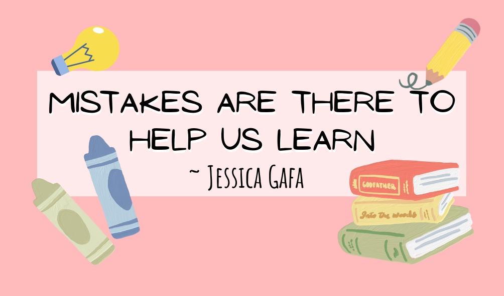

My Teaching Philosophy
Hi, I'm Jessica Gafa, a passionate pre-service teacher specialising in Mathematics and Digital Technologies. This website showcases my teaching philosophy, classroom strategies, lesson resources, and professional experience. Feel free to explore and learn more about my journey as an educator.
Behaviour Management Philosophy
I believe that behaviour is a form of communication and that every behaviour happens for a reason. Rather than viewing challenging behaviour as something to simply stop, I see it as an opportunity to understand what a student is experiencing and what support they may need. My approach begins with identifying the underlying causes, whether they are social, emotional, academic, or environmental. By building positive relationships and creating a safe and respectful classroom environment, I aim to prevent many issues before they arise. When challenges do occur, I focus on restorative conversations, consistency, and strategies that teach self regulation rather than punishment. This allows students to feel heard, supported, and guided toward making better choices in the future. My goal is to help students develop the skills they need to manage their own behaviour, while also maintaining a classroom culture that is calm, inclusive, and focused on learning.
